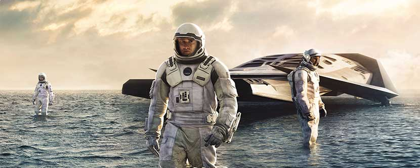

Mike Williams
Mike WilliamsEddie Redmayne and Birdman pull ahead in Oscars race
Eddie Redmayne pulled ahead of his rivals in the race for the best actor Oscar when he won a Screen Actor's Guild award for his role as Stephen Hawking in The Theory of Everything on Sunday night. The 32-year-old actor beat rivals Benedict Cumberbatch, Steve Carell, Jake Gyllenhall and Michael Keaton to the prize for make actor in a leading role at the ceremony in Los Angeles.

Weekend Scrambles Top Oscar Prospects
An unexpected double win for Alejandro G. Iñárritu’s “Birdman,” at expence of Richard Linkater's "Boyhood", jolted the Oscar race over the weekend, even as Hanvey Weinstein made a bit to exchange his own contender. "The Imitation Game", as a filmic standard-bearer against past injustice cirected ai gays.
From 'American Sniper' to 'Whiplash' and everything in between
This year’s Oscars nominations were announced Thursday morning and, despite a few snubs, and surprises, the Best Picture nominees were mostly the usual batch of well-received prestige pics - thought they also received reviews that weren't always 100% positive.
87th Academy Awards Nominations
The 2015 Academy Award nominations were announced this morning, at the first time ever all 24 nominations were broadcast live. The nominations were announced by directors J.J Abrams and Alfonso Cuaron, Cris Pine, and Academy President Cheryl Boone Isaacs...
Showing the Smarts to Play the Genius
With his wide forehead and high cheekbones, Benedict Cumberbatch has been compared, and not unreasonably (especially if you’ve seen him in “August: Osage County”), both to an otter and to Sid the Sloth from the animated movie “Ice Age.” He also has one of those rumbling, mellifluous British voices that are capable of revving up and whipping out dialogue, perfectly articulated, at breakneck speed. He can talk faster than most people think.